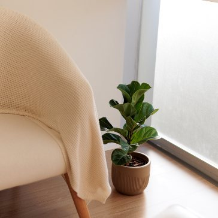

Psicoterapia individual
Um processo personalizado para explorar pensamentos, emoções e comportamentos com segurança e construir uma base sólida para a vida.
Instituto de Psicologia · Joinville
Uma equipe multiabordagem para adultos, adolescentes, casais e famílias — no consultório, no Centro de Joinville, ou online, onde você estiver.
O Instituto
Um lugar pensado, no detalhe, para você se sentir acolhido desde a porta de entrada.
No Instituto Life Mind reunimos uma equipe de psicólogos competentes, capacitados e dedicados para oferecer o que há de melhor em cuidados psicológicos. Nosso compromisso com a ciência, a ética e a sociedade nos move a compreender o ser humano em sua totalidade.
Desde a inauguração, em maio de 2023, cada detalhe da clínica foi meticulosamente pensado para criar uma atmosfera de tranquilidade e confiança. Além dos atendimentos, desenvolvemos grupos terapêuticos, eventos e palestras sobre autocuidado emocional.
Especialidades
Áreas de cuidado oferecidas pela equipe, para diferentes momentos e públicos.
Um processo personalizado para explorar pensamentos, emoções e comportamentos com segurança e construir uma base sólida para a vida.
Um ambiente neutro e acolhedor para expressar necessidades, resolver conflitos e reconstruir a conexão a dois.
Espaço seguro para o adolescente expressar emoções, desenvolver habilidades e fortalecer a autoconfiança.
Apoio e estratégias para os desafios da criação dos filhos: disciplina, comunicação e vínculos saudáveis.
Acompanhamento para compreender e manejar a ansiedade, o estresse e os transtornos do impulso.
Desenvolvimento de habilidades de comunicação e resolução de conflitos no ambiente profissional.
Escuta clínica e visão integral da saúde com o Dr. Paulo Oliveira, com foco em prevenção e qualidade de vida.
Grupos periódicos com temas como orientação parental, transtornos ansiosos e transtornos alimentares.
Também realizamos palestras e workshops para empresas, escolas e profissionais da região. Fale com a clínica
Encontre seu psicólogo
Uma orientação rápida a partir da nossa equipe real. A escolha final é sempre sua — e a recepção ajuda no que precisar.
Encontre seu psicólogo
Passo 1Para quem é o atendimento?
Passo 2 · opcionalO que você procura?
Equipe
Cada profissional tem uma abordagem e um público de atuação. Conheça quem faz o Instituto Life Mind.
Educação emocional
Vídeos curtos sobre ansiedade, o primeiro passo na terapia e o que a ciência mostra — direto de quem atende no Instituto.
Como funciona
Você envia uma mensagem e a recepção responde para entender o que você precisa.
A partir das suas necessidades e do profissional ou serviço desejado, ajudamos a escolher.
Atendimentos de segunda a sexta, das 8h às 20h, conforme a agenda de cada profissional.
No consultório, no Centro de Joinville, ou online — com boa conexão e um espaço reservado.
Diferenciais
TCC, DBT, ACT, abordagem junguiana, Terapia do Esquema e Logoterapia sob o mesmo teto.
Ambiente acolhedor e silencioso, projetado para transmitir tranquilidade e confiança.
Portas e corredor amplos, com acesso facilitado para todas as pessoas.
Vagas nos fundos do prédio, com entrada pela Rua Servidão Paulo Carlos Mário Gruner (placa azul).
Você escolhe a modalidade que cabe na sua rotina, com a mesma qualidade de cuidado.
Empresa que acolhe a comunidade LGBTQ+ — um lugar seguro e respeitoso.
Também oferecemos acompanhamento médico com o Dr. Paulo Oliveira.
Grupos, palestras e workshops de educação emocional para escolas e empresas.
Presencial e online
No Centro de Joinville, num espaço projetado para o seu conforto do momento em que você entra.

Vários profissionais da equipe atendem por videochamada, com a mesma escuta e cuidado.
Avaliações reais
Atendimento ágil e muito cordial desde o primeiro contato. As videochamadas têm ótima qualidade. O acolhimento da Paula é incrível — senti que meu bem-estar é prioridade em todo momento.
Profissionais incríveis e ambiente acolhedor. Minha psicóloga há quatro anos, a Paula, tem um coração enorme e muita sabedoria — foi de extrema importância para o meu crescimento pessoal e profissional.
A psicóloga Sabrina oferece um acolhimento humanizado e conduz os atendimentos com muita empatia e sensibilidade. Recomendo!
Eu tinha preconceito em relação à terapia. O que me ajudou a quebrar isso foi ser atendida por uma excelente profissional, a Sabrina Blattmann, muito atenciosa e acolhedora. Pena não ter feito antes!
Lugar incrível, com profissionais de ótima qualidade. Foi o motivo pelo qual escolhi a Life Mind como uma das sedes do meu atendimento como médico. Super recomendo!
Atendimento personalizado e muito profissional, feito com muito carinho e técnica na área.
Um ambiente acolhedor, organizado e muito profissional. Desde o primeiro contato fui muito bem recebida — um espaço que transmite confiança e se preocupa com o bem-estar dos pacientes.
Localização e contato
Av. Juscelino Kubitschek, 410 — Sala 109A · Centro, Joinville — SC · CEP 89201-906
Nos fundos do prédio, com entrada pela Rua Servidão Paulo Carlos Mário Gruner. Há uma placa azul na entrada da rua.
Segunda a sexta, das 8h às 20h. Horários conforme a agenda de cada profissional.
Portas e corredor amplos, com acesso facilitado para todas as pessoas.
Perguntas frequentes
Dê o primeiro passo
Conte o que você procura e ajudamos a encontrar o melhor caminho — o profissional, a abordagem e o horário que fazem sentido para você.